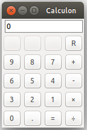

Frustrated by several attempts at creating GUI-based programs that I've tried in the past, I decided to try how differently the story could end when using a language that promises enlightenment to its users. I ended up writing Calculon, a simple calculator, and in the process learned a couple of things about Racket and the racket/gui module (and paid homage to one of the best cartoons in history).
racket/gui moduleThe module which I used for the GUI is called, as was to be expected, racket/gui. I have read a bit of the tutorial to understand the basic philosophy, and I was ready to start hacking.
The principle is simple: there are some window objects which work as containers, that in turn contain elements (like buttons, menus, other containers, you name it). In the beginning, I wrote everything in a single source file, but later it was easy to factor out the pieces and I happily ended up with three parts:
Let's tear them down to see what's inside.
I wanted to have a basic layout for my calculator, so I thought to have the classic matrix of buttons with the digits, the operations, and the decimal point, to which at the end I added a reset button.

The display is only for output, and shows what the user inserts by clicking the buttons (which actually is rather annoying, but limits a lot error management, since we almost completely control the input).
We start by defining a generic container known as frame, inside which we start putting the display:
(define frame (new frame% [label "Calculon"])) (define display$ (new text-field% (label "") (parent frame) (init-value "0")))
The parent-child relationship is quite important and just describes who owns whom (or who belongs to whom): in this case, we say that the display$ objct belongs to the frame.
At this point, the building block is the horizontal-panel%, whose role is to provide an area to group elements horizontally (in this case, the buttons). So for the first row, we have the following:
;; Row 0: ? ? sqrt C (define row0 (new horizontal-panel% [parent frame])) (new button% [parent row0] [label ""] [min-width 30] [enabled #f]) (new button% [parent row0] [label ""] [min-width 30] [enabled #f]) (new button% [parent row0] [label ""] [min-width 30] [enabled #f]) (new button% [parent row0] [label "R"] [min-width 30] [callback (λ (b e) (send display$ set-value "0"))])
Man I love this language. Can it get easier than that? You have a line and you get buttons inside. Each button has a label, can be disabled, can be set to a minimum width, and can be associated to a callback (that takes as arguments the button object itself and the event). Buttons belong to the row, which in turn belongs to the frame.
After we finish listing the rows, we show the frame itself:
(send frame show #t)
This is general syntax for object methods call: send means Call the method show of the object frame. The display shown above works the same way: Call the method set-value of the display$ object.
After some refactoring, I left only 2 functions inside the GUI module:
;; GUI-related functions ;; Push a button of an operation (+, -, ...) (define (push-operation op) (send display$ set-value (string-append (send display$ get-value) op))) ;; Push a button which is not an op (digit, decimal value) (define (push-number button-value) (define current-display (send display$ get-value)) (define result (match current-display [(regexp #rx"^0") button-value] [_ (string-append current-display button-value)])) (send display$ set-value result))
The first one just takes the operation button we have just pressed, and created a string to send to the display. The second introduces a possibly useless complication coming from the fact that I want the initial 0 to be substituted by the first digit the user inserts. It uses my favorite function, match, to apply a regular expression to what is currently in the display: if it starts with 0, just substitute it with the button value (buttons in this case are only digit buttons); otherwise, just append.
The expression parser is invoked as a callback of the = button, and takes whatever is on the display to try and evaluate it, returning the result of the evaluation.
(define (push-equal expr) (define ops-lst (regexp-match #px"(\\d+[./]?\\d*)\\s*([-÷+×])\\s*(\\d+[./]?\\d*)" expr)) (define result 0) (match ops-lst [(list _ x f y) (number->string ((string->f f) (string->number x) (string->number y)))] [_ (raise exn:fail:user)]))
In this case, we just match the expressions of the form dictated by the (rather cumbersome) regular expression on line 3. It is actually very basic, after all the escaping is stripped; it takes also into account that Racket uses fractions when it can to display fractional numbers, and this is why I need to match both the decimal point (which is one of the possible buttons) and the '/' character of a fraction.
The match function shines even brighter here: if what I match is of the form of a list of 3 elements x f y, then assume that f is an operation and apply it to the operands x and y.
No piece of software can be considered complete without a proper unit test module. I am pretty happy with the layout I have found for the testing modules of my Racket projects, so I'll paste it here and try to explain in detail:
#lang racket (require rackunit rackunit/text-ui "calculon.rkt") (module+ test (define suite (test-suite "calculon: callback tests" (test-case "Check equal callback" (check-equal? (push-equal "8+5") "13") (check-equal? (push-equal "12.11 - 14.03") "-1.92") ;(check-equal? (push-equal "4/5 * 3") "12/5") ; FIXME ;(check-equal? (push-equal "20/3 * 1/5") "10.0") ; FIXME ))) (run-tests suite))
Notice first the require list: apart from the obvious modules for testing, I only require the expression parser. The more GUI-related function are not interesting for testing, since they only make easy transformations to their input for displaying purposes. However, testing the parser is very useful, as frees us from testing manually via pressing the buttons to try out the few operations that we want to test.
I write a separate Racket module that I call test ((module+ test) means Add what follows to the module called test. Modules are an amazing mechanism and one of their feature is the ability to span several source files). Inside the module, I define a test-suite, which is just a collection of test cases (in this case, only one). Now inside the test-case, I call repeatedly check-equal? to compare the result of the call to push-equal with the result I expect. I can run it separately in DrRacket by just pushing Run, or from the command line by issuing raco test calculon-test.rkt:
$ raco test calculon-test.rkt raco test: (submod "calculon-test.rkt" test) 1 success(es) 0 failure(s) 0 error(s) 1 test(s) run 0 2 tests passed
I am very happy with the result. It is simple, but also it didn't take much time, and I have used a GUI in a program of mine for the first time. The complete project lives on GitHub; feel free to mail me your thoughts and to contribute to it.